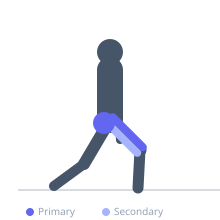
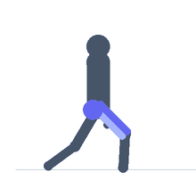

Exercise guide / Split Squat
Split Squat
The split squat is a stationary lunge variation where the feet remain fixed in a staggered stance throughout the set. Unlike a walking or reverse lunge, there is no stepping involved — the lifter descends and ascends repeatedly from the same foot position. This makes it an excellent tool for single-leg strength development with greater stability than other lunge variations and a valuable precursor to the Bulgarian split squat.
Primary muscles
rectus femoris
vastus lateralis
vastus medialis
gluteus maximus
Secondary muscles
biceps femoris long head
gluteus medius
Stabilizers
tensor fasciae latae
transverse abdominis
Equipment
No Equipment (Bodyweight)
Optional
Dumbbell (Fixed)
Standard Barbell


Starting position
- Take a lunge stride and hold it — one foot forward, one foot back. The rear foot rests on its toes. The torso is upright.
Setup
- Adjust stride length so the front shin is roughly vertical when the rear knee is near the floor. Hold dumbbells at the sides or use a barbell on the traps for load.
Steps
- Step 1: Position the feet in a staggered stance with enough stride length that the front shin stays close to vertical at the bottom.
- Step 2: Brace the core. Lower the rear knee toward the floor by bending both the front and rear knee simultaneously.
- Step 3: Descend until the rear knee is 1–2 cm above the floor.
- Step 4: Drive through the front foot — heel and midfoot — to return to the starting position.
- Step 5: Complete all reps on one leg before switching.
Coaching cues
- Drop the rear knee straight down
- Front foot drives the work — not the rear
- Keep the torso tall throughout
Breathing
- Inhale as you lower. Exhale as you return to standing.
Range of motion
- Rear knee to within 1–2 cm of floor. Full standing extension at the top.
Tempo
- 2-0-1-0
Common mistakes
- Stride too short — front knee drifts far over the toe
- Leaning forward excessively — keep the torso upright
- Pushing off the rear toes instead of emphasizing the front leg
Safety
- Establish balance before adding load
- If the front knee is painful, check foot position and reduce stride length
Training
- strength: 5–10 reps
- hypertrophy: 10–15 reps
- endurance: 15–25 reps
- strength: 3–4 sets
- hypertrophy: 3–4 sets
- endurance: 2–3 sets
- Rest: {'strength': 120, 'hypertrophy': 60, 'endurance': 45}